Code
## Load Final Cleaned Dataset
library(tidyverse)
library(lubridate)
library(scales)
library(here)
library(viridis)
df <- read_csv(here("data", "clean", "crypto_final_clean.csv"), show_col_types = FALSE)This chapter explores how price movements, sentiment, and search attention evolve over time for Bitcoin and Ethereum. The analysis is descriptive and focuses on answering the following questions:
Each section introduces visual evidence, followed by space for interpretation based on the patterns you observe.
## Load Final Cleaned Dataset
library(tidyverse)
library(lubridate)
library(scales)
library(here)
library(viridis)
df <- read_csv(here("data", "clean", "crypto_final_clean.csv"), show_col_types = FALSE)This section establishes baseline market behavior. The plots below show how Bitcoin and Ethereum prices evolved across the one-year window.
ggplot(df, aes(x = date, y = price, color = coin)) +
geom_line(linewidth = 1) +
scale_y_continuous(labels = label_dollar()) +
scale_color_manual(
values = c(
"BITCOIN" = "#3182bd", # blue
"ETHEREUM" = "#e6550d" # orange
)
) +
facet_wrap(~ coin, ncol = 1, scales = "free_y") +
labs(
x = "Date",
y = "Price",
title = "Daily Price Trends for Bitcoin and Ethereum"
) +
theme_grey(base_size = 16) +
theme(
legend.position = "none",
strip.text = element_text(size = 14, face = "bold"),
plot.title = element_text(size = 18, face = "bold"),
axis.title = element_text(size = 14)
)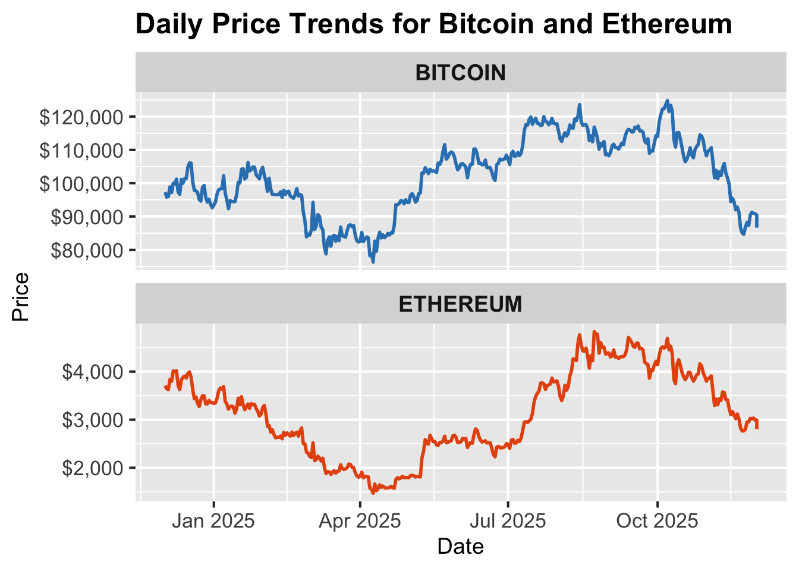
The plot shows that Bitcoin and Ethereum move in broadly similar patterns throughout the year. Both experience an early-year decline, a strong midsummer recovery, and a late-year pullback. This parallel movement reflects how closely the two markets respond to the same macro forces and shifts in investor sentiment. Bitcoin begins the period near 100 thousand dollars, dips to the low 80 thousands in early spring, then rallies sharply above 120 thousand dollars during the summer. The surge aligns with renewed institutional inflows and optimism surrounding the upcoming 2025 halving. After peaking, it trends downward into the fall as broader risk sentiment cools and flows into crypto ETFs slow.
Ethereum mirrors this pattern but with larger percentage swings. It falls from around 4 thousand to below 2 thousand dollars early in the year amid uncertainty around network upgrades and competition from L2 platforms. It rebounds aggressively in the summer, nearly doubling from its spring lows, before softening again in the fall.
Comparing the two, Ethereum is more volatile, showing deeper drawdowns and more dramatic recoveries, while Bitcoin moves more gradually despite larger absolute price changes.
Both assets show clear jumps and dips around mid-summer and late fall. These shifts coincide with changes in Federal Reserve rate expectations, ETF flow cycles, and crypto-specific developments like upgrade announcements and regulatory commentary. Neither coin exhibits long periods of calm, highlighting how sensitive cryptocurrency markets remain to external news and behavioral sentiment.
SHORTER: Bitcoin and Ethereum move through the year in similar waves. Both fall early in the year, recover strongly in the summer, and pull back again in the fall. Bitcoin shows steadier movements in absolute terms, while Ethereum swings more in percentage terms. Both react quickly to changes in economic news, liquidity conditions, and crypto specific announcements. Neither coin stays stable for long, which highlights how sensitive crypto prices are to investor sentiment and headlines.
Price trends describe the overall direction of the market, but they do not show how much prices fluctuate day to day. Volatility gives a simple way to capture this movement. Higher volatility means larger and more frequent swings. To highlight these patterns, we plot a two week rolling average of absolute daily returns for each coin. Faceting makes it easy to compare Bitcoin and Ethereum on their own scales.
library(zoo)
Attaching package: 'zoo'The following objects are masked from 'package:base':
as.Date, as.Date.numericdf_vol <- df |>
mutate(daily_return = as.numeric(daily_return)) |>
group_by(coin) |>
mutate(
abs_return = abs(daily_return),
roll_vol = rollapply(abs_return, width = 14, FUN = mean,
fill = NA, align = "right")
)
ggplot(df_vol, aes(x = date, y = roll_vol, color = coin)) +
geom_line(linewidth = 1) +
facet_wrap(~ coin, ncol = 1, scales = "free_y") +
labs(
x = "Date",
y = "Two Week Rolling Volatility",
title = "Short Term Volatility for Bitcoin and Ethereum"
) +
scale_color_manual(values = c("BITCOIN" = "#3182bd", "ETHEREUM" = "#e6550d")) +
theme_grey(base_size = 16) +
theme(legend.position = "none")Warning: Removed 28 rows containing missing values or values outside the scale range
(`geom_line()`).
Both assets move through clear periods of calm and turbulence. Volatility rises in the spring and again in the fall, which matches moments when markets were reacting to shifting economic news and crypto specific developments. Ethereum has consistently higher volatility, reflecting its more reactive market environment. Bitcoin is steadier, with smaller and less frequent spikes. The midsummer increase in volatility for both coins appears shortly after their strong price rebound, showing that the rally was accompanied by greater uncertainty and faster price adjustments.
Price swings tell us how the market behaves, but sentiment shows how people feel about these moves. Sentiment captures the tone of online discussions, which often reacts quickly to news, uncertainty, and market trends. To see how these attitudes evolve, we plot daily sentiment scores for each coin along with a smoother that highlights the overall direction.
Note: The sentiment score reflects the tone of online discussions, with positive values indicating optimism, negative values indicating concern, and values near zero showing neutral sentiment.
ggplot(df, aes(x = date, y = sentiment_score, color = coin)) +
geom_line(alpha = 0.6, linewidth = 0.8) +
geom_smooth(se = FALSE, linewidth = 1.2) +
facet_wrap(~ coin, ncol = 1, scales = "free_y") +
labs(
x = "Date",
y = "Sentiment Score",
title = "Crowd Sentiment Over Time"
) +
scale_color_manual(values = c("BITCOIN" = "#3182bd", "ETHEREUM" = "#e6550d")) +
theme_grey(base_size = 16) +
theme(legend.position = "none")`geom_smooth()` using method = 'loess' and formula = 'y ~ x'Warning: Removed 62 rows containing non-finite outside the scale range
(`stat_smooth()`).Warning: Removed 62 rows containing missing values or values outside the scale range
(`geom_line()`).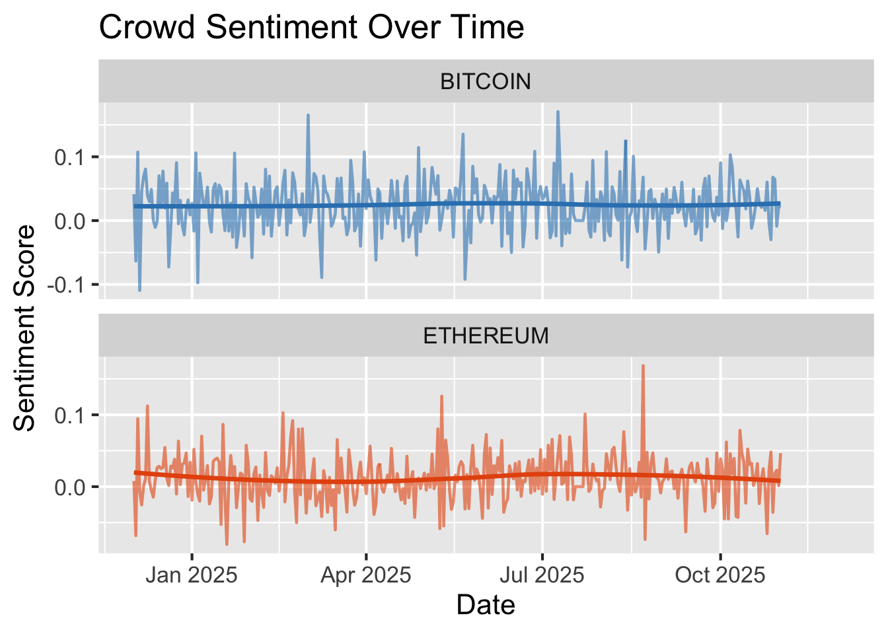
Sentiment for both Bitcoin and Ethereum moves around a fairly narrow band, with frequent short spikes in optimism or concern. The broader trend rises through the summer and dips again in the fall, which lines up with the price cycles seen earlier. Ethereum has slightly sharper swings, suggesting its online discussions respond more strongly to news. Overall, sentiment tends to follow price movements rather than lead them, which is consistent with investors reacting to events as they unfold.
These patterns set up the next question. If sentiment reacts to market movements, how does public attention behave during the same periods, and does it track volatility more closely than sentiment does?
Public attention offers another view of market behavior because it captures how often people seek information about each coin. Tracking how search interest changes over time helps reveal when curiosity or concern rises in the broader public.
Note: Search interest reflects how often people searched for each coin online, which serves as a proxy for public attention or curiosity. The scale runs from 0 to 100, where 100 represents that coin’s highest search activity during the year and all other values show relative levels compared to that peak.
ggplot(df, aes(x = date, y = search_interest, color = coin)) +
geom_line(linewidth = 0.9) +
facet_wrap(~ coin, ncol = 1, scales = "free_y") +
scale_color_manual(values = c("BITCOIN" = "#3182bd", "ETHEREUM" = "#e6550d")) +
labs(
x = "Date",
y = "Search Interest",
title = "Search Interest Over Time for Bitcoin and Ethereum"
) +
theme_grey(base_size = 16) +
theme(
legend.position = "none",
strip.text = element_text(size = 14, face = "bold"),
plot.title = element_text(size = 18, face = "bold")
)Warning: Removed 12 rows containing missing values or values outside the scale range
(`geom_line()`).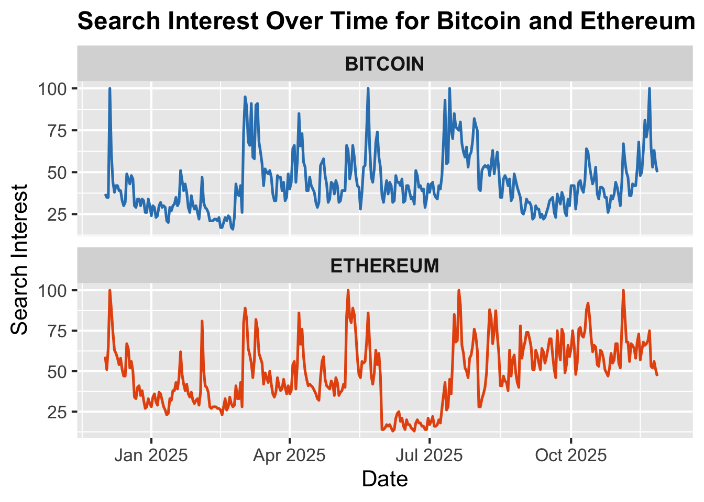
Search interest for both coins moves in noticeable waves across the year. Peaks appear during periods of fast price changes or major news, with Bitcoin showing strong attention early in the year and again in midsummer and late fall. Ethereum has similar cycles but with sharper bursts tied to ecosystem updates. The scale runs from 0 to 100 and reflects each coin’s highest search volume over the year. A value of 100 marks that coin’s peak interest, and lower values show relative drops from that point. The values are not comparable across coins. Overall, search activity rises when markets are more active or uncertain, matching the patterns seen in price and volatility.
To explore how attitudes relate to actual price swings, we compare daily sentiment scores with the size of daily returns. A scatterplot with a smooth trend helps show whether large swings tend to occur when sentiment is very positive, very negative, or somewhere in between.
Note: Absolute daily return measures how much the price moved in a single day, regardless of direction. Larger values indicate more volatile trading days, while values near zero show little movement. The sentiment score reflects the tone of online discussions, with positive values indicating optimism, negative values indicating concern, and values near zero showing neutral sentiment.
ggplot(df, aes(x = abs(daily_return), y = sentiment_score, color = coin)) +
geom_point(alpha = 0.35) +
geom_smooth(se = FALSE) +
facet_wrap(~ coin, scales = "free") +
scale_color_manual(values = c("BITCOIN" = "#3182bd", "ETHEREUM" = "#e6550d")) +
labs(
x = "Absolute Daily Return",
y = "Sentiment Score",
title = "Sentiment and Market Movement"
) +
theme_grey(base_size = 16) +
theme(
legend.position = "none",
strip.text = element_text(size = 14, face = "bold"),
plot.title = element_text(size = 18, face = "bold")
)`geom_smooth()` using method = 'loess' and formula = 'y ~ x'Warning: Removed 64 rows containing non-finite outside the scale range
(`stat_smooth()`).Warning: Removed 64 rows containing missing values or values outside the scale range
(`geom_point()`).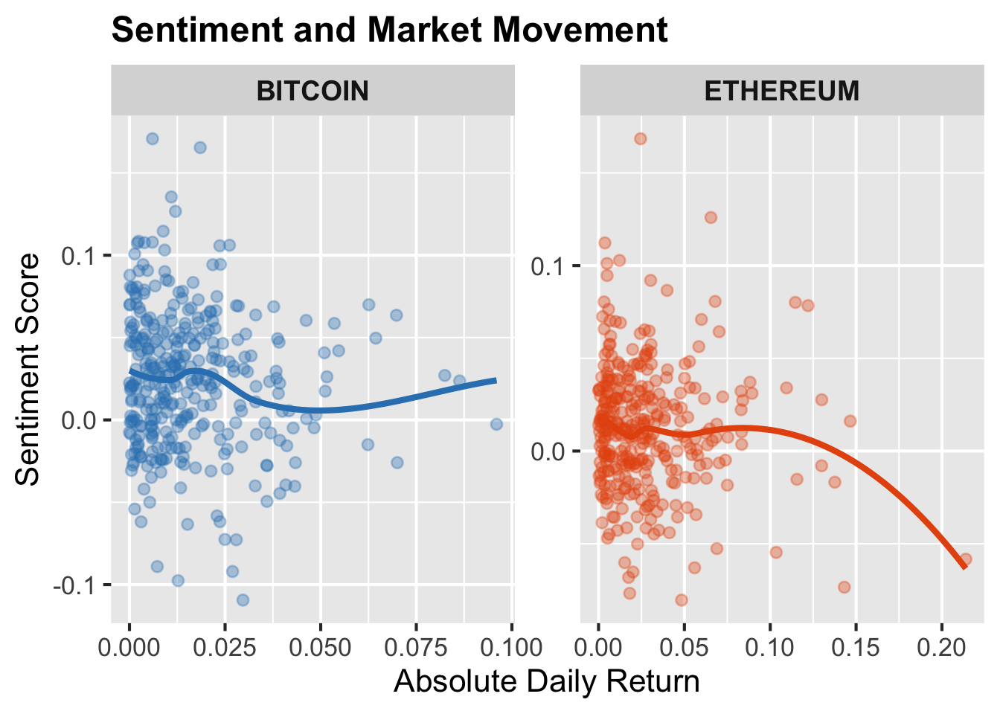
Each point in the plot represents one day. The horizontal axis shows the sentiment score for that day, and the vertical axis shows how large the price move was on that same day. Larger values on the vertical axis mean bigger up or down swings in the market. Overall, the plot shows that most days have sentiment close to zero and small price moves. As sentiment becomes more extreme, the range of possible price moves becomes wider. In other words, calm sentiment is usually followed by calmer trading, while more emotional sentiment days are linked with more active price movement. The smooth line helps summarize this pattern. For Bitcoin, the line is almost flat because most of the points cluster in the center. Ethereum has a slight dip at the center and rises at the edges, which reflects that Ethereum tends to have bigger moves on days when sentiment is strongly positive or negative. The main takeaway is that sentiment and market activity are related, but the relationship is not linear. Extreme moods in the market often align with larger price changes, especially for Ethereum.
Because the scatterplot suggests that sentiment becomes more dispersed on high movement days, we next group days into four return categories based on the size of their absolute daily price change (very small, small, medium, and large). Visualizing these buckets with violin plots lets us see how the full distribution of sentiment shifts as price moves become larger.
df_binned <- df |>
mutate(
return_bin = cut(
abs(daily_return),
breaks = c(0, 0.01, 0.03, 0.06, Inf),
labels = c("Very Small", "Small", "Medium", "Large"),
include.lowest = TRUE
)
) |>
filter(!is.na(return_bin)) # remove NA category
ggplot(df_binned, aes(x = return_bin, y = sentiment_score, fill = coin)) +
geom_violin(alpha = 0.7, trim = TRUE, color = "gray30", linewidth = 0.4) +
facet_wrap(~ coin, scales = "free_y") +
scale_fill_manual(values = c("BITCOIN" = "#3182bd", "ETHEREUM" = "#e6550d")) +
labs(
x = "Absolute Daily Return Category",
y = "Sentiment Score",
title = "Sentiment Distributions Across Return Categories"
) +
theme_grey(base_size = 16) +
theme(
legend.position = "none",
strip.text = element_text(size = 14, face = "bold"),
axis.text.x = element_text(size = 12),
plot.title = element_text(size = 18, face = "bold"),
plot.subtitle = element_text(size = 13)
)Warning: Removed 62 rows containing non-finite outside the scale range
(`stat_ydensity()`).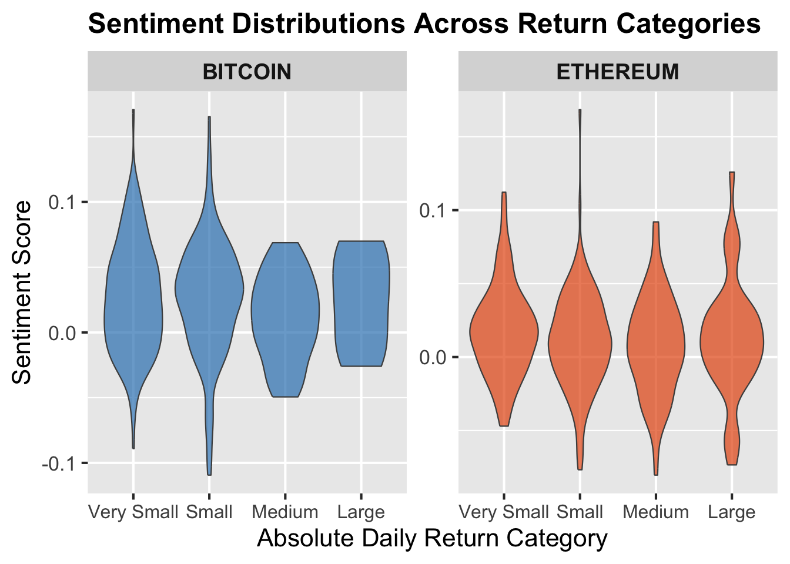
The violin plots show how sentiment is distributed on days with different sized price moves. For both coins, sentiment stays close to neutral when returns are very small or small. As returns grow into the medium and large categories, the range of sentiment values widens, meaning that larger price swings tend to produce both more positive and more negative reactions rather than shifting sentiment in a single direction. Ethereum shows a stronger increase in variation than Bitcoin, which aligns with its generally more reactive market behavior. This pattern is consistent with the scatterplot, which also shows that sentiment becomes more dispersed, rather than uniformly higher or lower, on high-movement days.
To complete the comparison, we examine how Bitcoin and Ethereum differ in the overall distribution of their daily returns.
ggplot(df, aes(x = daily_return, fill = coin)) +
geom_density(alpha = 0.5) +
scale_fill_manual(values = c("BITCOIN" = "#3182bd", "ETHEREUM" = "#e6550d")) +
labs(
x = "Daily Return",
y = "Density",
title = "Distribution of Daily Returns for Bitcoin and Ethereum"
) +
theme_grey(base_size = 16) +
theme(
legend.position = "none",
strip.text = element_text(size = 14, face = "bold")
)Warning: Removed 2 rows containing non-finite outside the scale range
(`stat_density()`).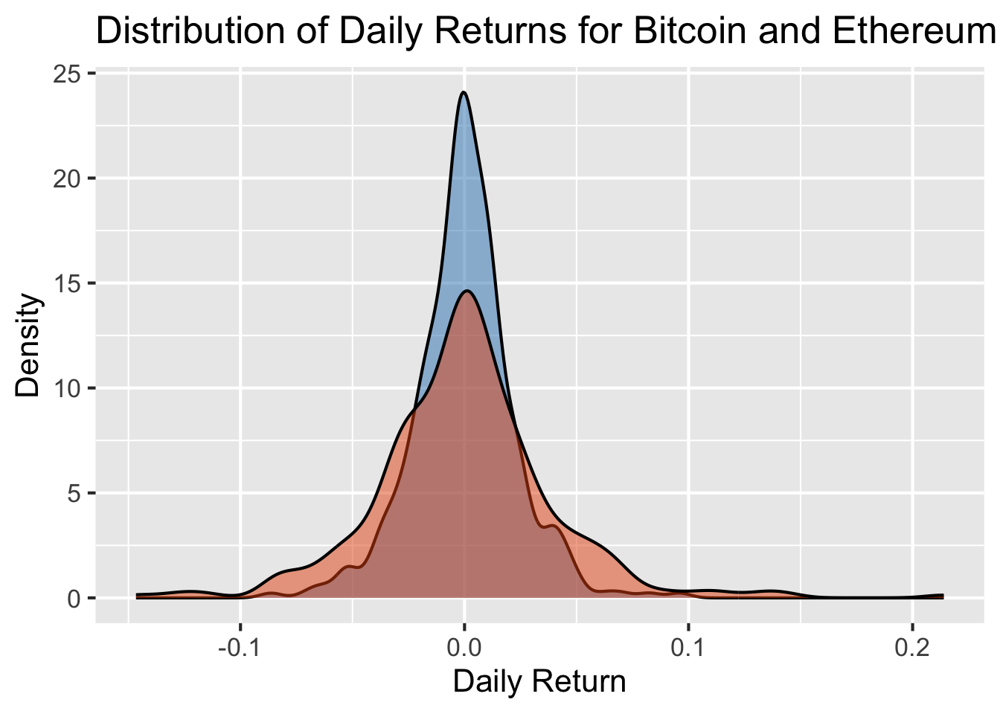
Comparing these return distributions helps show how each asset responds to the behavioral signals explored earlier. Throughout the analysis, Ethereum consistently showed sharper sentiment swings, higher volatility, and more variation on large movement days. The wider distribution of its returns reinforces this pattern, indicating that Ethereum reacts more strongly to shifts in sentiment and public attention. Bitcoin’s tighter distribution aligns with its steadier sentiment profile and smaller volatility spikes. Together, these results show that behavioral indicators map onto meaningful differences in market behavior across the two assets.
After comparing behavioral indicators across assets, the next question is whether shifts in sentiment or search interest tend to occur before changes in price. To explore this, we examine how yesterday’s sentiment and search activity relate to today’s returns.
df_lag <- df |>
group_by(coin) |>
mutate(
sentiment_lag1 = lag(sentiment_score, 1),
search_lag1 = lag(search_interest, 1)
)
ggplot(df_lag, aes(x = sentiment_lag1, y = daily_return, color = coin)) +
geom_point(alpha = 0.35) +
geom_smooth(se = FALSE, linewidth = 1) +
facet_wrap(~ coin, scales = "free_y") +
scale_color_manual(values = c("BITCOIN" = "#3182bd", "ETHEREUM" = "#e6550d")) +
labs(
x = "Sentiment (Previous Day)",
y = "Daily Return",
title = "Next-Day Returns vs Previous-Day Sentiment"
) +
theme_grey(base_size = 16) +
theme(
legend.position = "none",
strip.text = element_text(size = 14, face = "bold")
)`geom_smooth()` using method = 'loess' and formula = 'y ~ x'Warning: Removed 62 rows containing non-finite outside the scale range
(`stat_smooth()`).Warning: Removed 62 rows containing missing values or values outside the scale range
(`geom_point()`).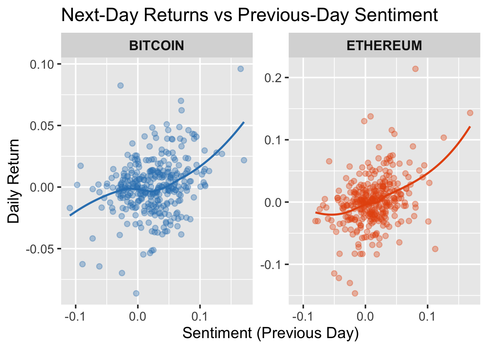
This plot compares sentiment from the previous day with the next day’s return. For both coins, most points cluster near zero on both axes, meaning that typical sentiment changes do not correspond to large next day price moves. However, the smooth trends curve upward for each asset, suggesting that more positive sentiment is often followed by slightly higher next day returns. Ethereum shows a stronger upward curve and wider spread of returns, which fits its more reactive behavior seen earlier in the analysis.
These patterns suggest that shifts in sentiment can sometimes precede more active or positive price movement, especially for Ethereum, although the effect is modest and not predictive. This supports the broader finding that behavioral indicators relate differently to each asset, reinforcing that Ethereum responds more strongly to changes in online sentiment than Bitcoin.
ggplot(df_lag, aes(x = search_lag1, y = daily_return, color = coin)) +
geom_point(alpha = 0.35) +
geom_smooth(se = FALSE, linewidth = 1) +
facet_wrap(~ coin, scales = "free_y") +
scale_color_manual(values = c("BITCOIN" = "#3182bd", "ETHEREUM" = "#e6550d")) +
labs(
x = "Search Interest (Previous Day)",
y = "Daily Return",
title = "Next-Day Returns vs Previous-Day Search Interest"
) +
theme_grey(base_size = 16) +
theme(
legend.position = "none",
strip.text = element_text(size = 14, face = "bold")
)`geom_smooth()` using method = 'loess' and formula = 'y ~ x'Warning: Removed 12 rows containing non-finite outside the scale range
(`stat_smooth()`).Warning: Removed 12 rows containing missing values or values outside the scale range
(`geom_point()`).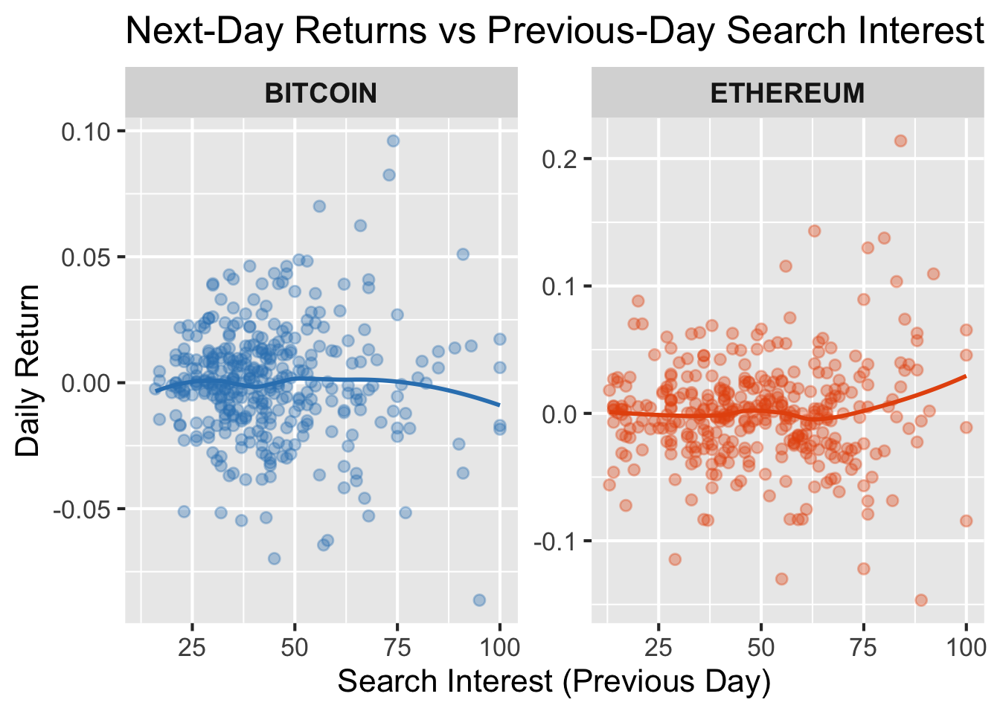
For both Bitcoin and Ethereum, most points lie close to zero on both axes, indicating that typical fluctuations in search activity do not correspond to large next day price changes. The trend lines are nearly flat for Bitcoin and only gently upward-sloping for Ethereum, suggesting that higher public attention sometimes precedes slightly more positive or more active trading in Ethereum but has little effect for Bitcoin, (one could even argue that since it is slighly downward sloping, higher public attention precedes slighly more negative or less active trading for Bitcoin).
These patterns show that search interest provides only a weak leading signal for next-day price movement, and that search interest is worse at mapping market activieity for these two coins in comparison to Sentiment.
To complement the lagged scatterplots, we also group days into broad sentiment and search categories to see whether average next-day returns differ after low, medium, or high behavioral activity.
Note: Rows with missing values appear because the first day for each coin has no previous-day sentiment after lagging, and these NA cases were removed before plotting so that only valid Low, Medium, and High sentiment categories remain.
df_bins <- df_lag |>
mutate(
sent_bin = cut(
sentiment_lag1,
breaks = quantile(sentiment_lag1, probs = c(0, .33, .66, 1), na.rm = TRUE),
labels = c("Low", "Medium", "High"),
include.lowest = TRUE
)
)
sent_summary <- df_bins |>
filter(!is.na(sent_bin)) |>
group_by(coin, sent_bin) |>
summarize(mean_return = mean(daily_return, na.rm = TRUE), .groups = "drop")
ggplot(sent_summary, aes(x = sent_bin, y = mean_return, fill = coin)) +
geom_col(position = "dodge") +
scale_fill_manual(values = c("BITCOIN" = "#3182bd", "ETHEREUM" = "#e6550d")) +
labs(
x = "Sentiment Level (Previous Day)",
y = "Mean Next-Day Return",
title = "Average Next-Day Returns by Previous-Day Sentiment Category"
) +
theme_grey(base_size = 16) +
theme(
#legend.position = "none",
plot.title = element_text(size = 12, face = "bold"),
strip.text = element_text(size = 12, face = "bold"),
)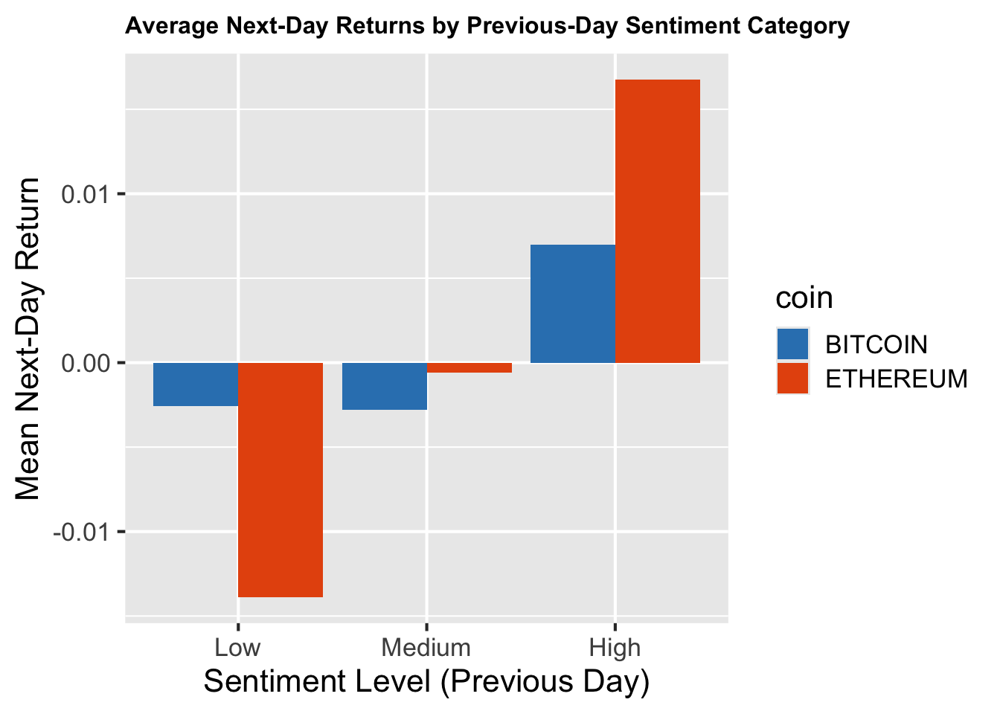
This bar chart shows how average next-day returns differ after days with low, medium, or high sentiment. For Bitcoin, returns are slightly negative following low or medium sentiment and modestly positive following high sentiment, although the differences are small. Ethereum shows a stronger pattern: low sentiment precedes small losses on average, while high sentiment is followed by more noticeably positive returns. This reinforces the earlier finding that Ethereum reacts more strongly to shifts in sentiment, whereas Bitcoin remains comparatively stable.
df_bins2 <- df_lag |>
mutate(
search_bin = cut(
search_lag1,
breaks = quantile(search_lag1, probs = c(0, .33, .66, 1), na.rm = TRUE),
labels = c("Low", "Medium", "High"),
include.lowest = TRUE
)
)
search_summary <- df_bins2 |>
filter(!is.na(search_bin)) |>
group_by(coin, search_bin) |>
summarize(mean_return = mean(daily_return, na.rm = TRUE), .groups = "drop")
ggplot(search_summary, aes(x = search_bin, y = mean_return, fill = coin)) +
geom_col(position = "dodge") +
scale_fill_manual(values = c("BITCOIN" = "#3182bd", "ETHEREUM" = "#e6550d")) +
labs(
x = "Search Interest Level (Previous Day)",
y = "Mean Next-Day Return",
title = "Average Next-Day Returns by Previous-Day Search Interest Category"
) +
theme_grey(base_size = 16) +
theme(
#legend.position = "none",
strip.text = element_text(size = 12, face = "bold"),
plot.title = element_text(size = 12, face = "bold"),
)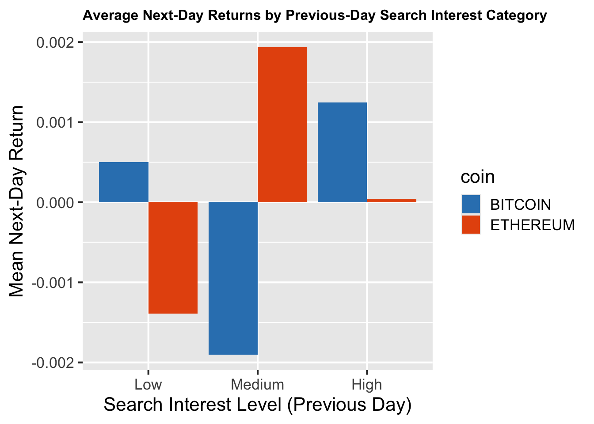
This chart compares average next-day returns after periods of low, medium, and high search interest. For Bitcoin, returns remain very close to zero across all search levels, suggesting that changes in public attention do not meaningfully precede price movement. Ethereum shows a small rise in next-day returns after medium search interest, although the effect disappears at high levels, indicating that spikes in attention do not consistently translate into stronger price reactions. Overall, search interest provides only weak and inconsistent signals, especially compared with sentiment.
df_scaled <- df |>
group_by(coin) |>
mutate(
sentiment_z = scale(sentiment_score)[,1],
search_z = scale(search_interest)[,1],
return_z = scale(daily_return)[,1]
) |>
select(date, coin, sentiment_z, search_z, return_z) |>
pivot_longer(cols = c(sentiment_z, search_z, return_z),
names_to = "variable",
values_to = "value")
ggplot(df_scaled, aes(x = date, y = value, color = variable)) +
geom_line(alpha = 0.7) +
facet_wrap(~ coin, ncol = 1, scales = "free_x") +
scale_color_manual(
values = c(
"sentiment_z" = "#3182bd",
"search_z" = "#31a354",
"return_z" = "#e6550d"
)
) +
labs(
x = "Date",
y = "Standardized Value",
title = "Standardized Trends in Sentiment, Search, and Returns"
) +
theme_grey(base_size = 16)Warning: Removed 38 rows containing missing values or values outside the scale range
(`geom_line()`).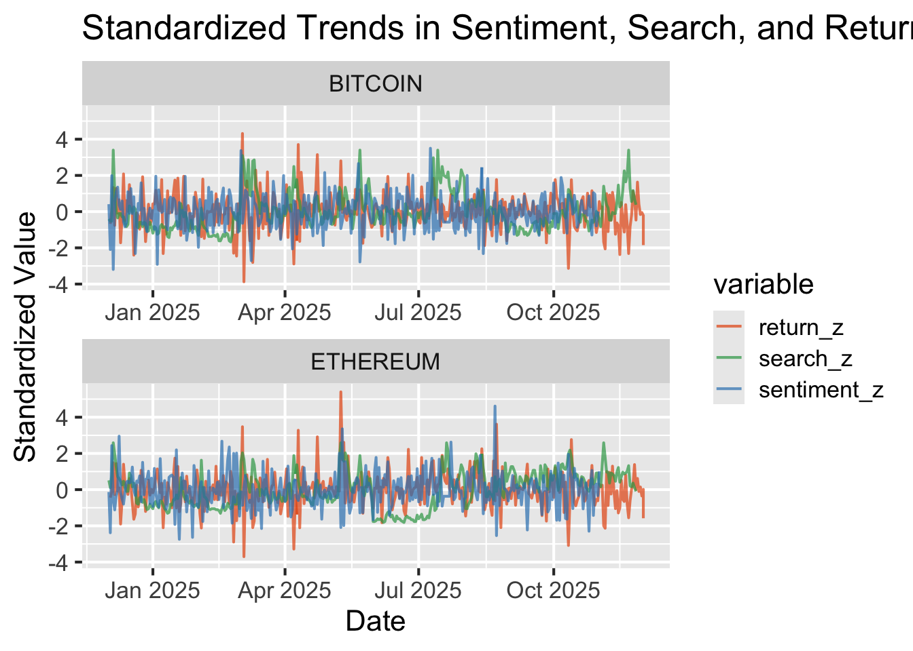
TO DO: Make everything flow, first focus on one var then the next
make sure it flows and make sure answer all questions and any other plots i can use?